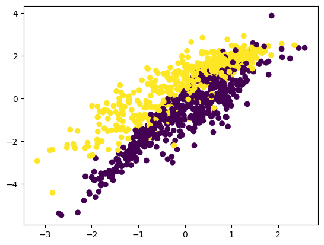
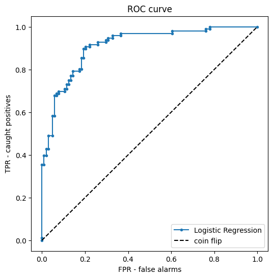
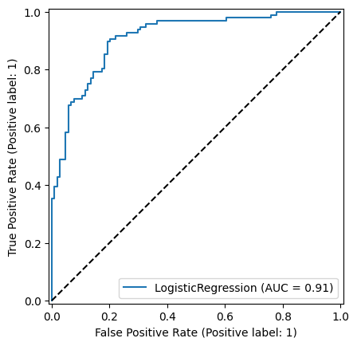

In [1]cell 1
from sklearn.linear_model import LogisticRegression from sklearn.model_selection import train_test_split import matplotlib.pyplot as plt from sklearn import datasets, metrics import pandas as pd from sklearn.datasets import make_classification
In [2]cell 2
x,y = make_classification(n_classes=2,n_features=5,n_samples=1000,random_state=1) plt.scatter(x[:,0],x[:,1],c=y)
Output
<matplotlib.collections.PathCollection at 0x11fd05a90>

In [3]cell 4
X_train , X_test,Y_train, Y_test = train_test_split(x,y, test_size=0.2, random_state=1)
In [4]cell 5
c1 = LogisticRegression() c1.fit(X_train,Y_train)
Output
LogisticRegression()
In [5]cell 7
proba = c1.predict_proba(X_test) # column 0 = P(class 0), column 1 = P(class 1)
p1 = proba[:, 1]
print("first 5 probabilities of class 1:", p1[:5].round(3))
print("predict() is just p1 >= 0.5 :", (c1.predict(X_test) == (p1 >= 0.5)).all())Output
first 5 probabilities of class 1: [0.55 0.608 0.991 0.922 0.814] predict() is just p1 >= 0.5 : True
In [6]cell 9
fpr, tpr, thresholds = metrics.roc_curve(Y_test, p1)
plt.figure(figsize=(6, 6))
plt.plot(fpr, tpr, marker=".", label="Logistic Regression")
plt.plot([0, 1], [0, 1], "k--", label="coin flip")
plt.xlabel("FPR - false alarms")
plt.ylabel("TPR - caught positives")
plt.title("ROC curve")
plt.legend()
plt.show()
In [7]cell 11
print("AUC :", round(metrics.roc_auc_score(Y_test, p1), 3))
print("accuracy:", round(c1.score(X_test, Y_test), 3))Output
AUC : 0.912 accuracy: 0.815
In [8]cell 13
metrics.plot_roc_curve(c1,X_test,Y_test)
Output
--------------------------------------------------------------------------- AttributeError Traceback (most recent call last) Cell In[8], line 1 ----> 1 metrics.plot_roc_curve(c1,X_test,Y_test) AttributeError: module 'sklearn.metrics' has no attribute 'plot_roc_curve'
In [9]cell 15
metrics.RocCurveDisplay.from_estimator(c1, X_test, Y_test) plt.plot([0, 1], [0, 1], "k--") plt.show()
